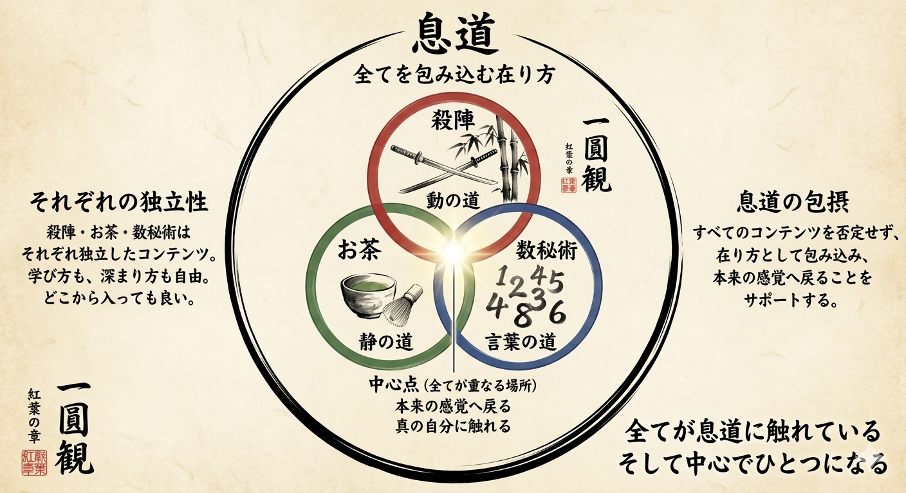

倭迅会が目指すもの
何かを新しく足すのではなく、
すでに身体の中にある感覚を、
もう一度思い出すための場です。
頭で理解するだけでなく、
身体の奥で腑に落ちること。
呼吸が変わると、姿勢が変わり、声が変わり、
場の受け取り方まで変わります。
一圓観
殺陣・茶道・数秘
これらは、それぞれ独立した入口です。
どこから入っても構いません。
ただ、中心ではすべてが一つに繋がっています。

その全体を包む考え方が、息道です。
呼吸は、殺陣の間合いにも、茶道の所作にも、数秘の言葉にも、
共通して流れています。
三つの入口
倭迅会の入口は一つではありません。
動くこと、静まること、数で読み解くこと。
それぞれ違う入口から、同じ中心へ向かっていきます。
殺陣
動きの中で、
呼吸・間・身体の軸を扱う。
茶道
静けさの中で、
所作・空気・感覚を整える。
数秘
数字を通して、
自分の航海図を読み解く。
自在流という考え方
自在流とは、型を押しつけるものではありません。
場に応じ、人に応じ、目的に応じて必要な形を選ぶ。
大切なのは、その人の中で本当に使える形になることです。
福和倭迅会 代表について
福田 ひろし（FUKUTA HIROSHI）
倭迅会の活動は、代表の舞台経験、殺陣、茶道、数秘、
そして身体と呼吸への実感から生まれています。
なぜこれらを一つの場として扱っているのか。
その背景は、代表紹介ページで詳しくご覧いただけます。